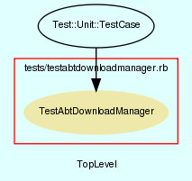

|  |
TestAbtPackage.rb
Unit testing for AbtPackage class.
Created by Eric D. Schabell <erics@abtlinux.org> Copyright 2006, GPL.
This file is part of AbTLinux.
AbTLinux is free software; you can redistribute it and/or modify it under the terms of the GNU General Public License as published by the Free Software Foundation; either version 2 of the License, or (at your option) any later version.
AbTLinux is distributed in the hope that it will be useful, but WITHOUT ANY WARRANTY; without even the implied warranty of MERCHANTABILITY or FITNESS FOR A PARTICULAR PURPOSE. See the GNU General Public License for more details.
You should have received a copy of the GNU General Public License along with AbTLinux; if not, write to the Free Software Foundation, Inc., 51 Franklin St, Fifth Floor, Boston, MA 02110-1301 USA
setup method for testing AbtPackage.
[ show source ]
# File TestAbtPackage.rb, line 59
59: def setup
60: @fortune = AbtPackage.new( $data )
61: end
Test method for ‘AbtPackage.testBuild()’
[ show source ]
# File TestAbtPackage.rb, line 102
102: def testBuild
103: assert_equal( false, true, "testBuild()" )
104: end
Test method for ‘AbtPackage.testConfigure()’
[ show source ]
# File TestAbtPackage.rb, line 95
95: def testConfigure
96: assert_equal( false, true, "testConfigure()" )
97: end
Test method for ‘AbtPackage.testDetails()’
[ show source ]
# File TestAbtPackage.rb, line 66
66: def testDetails
67: assert_equal( $data['name'], @fortune.details['name'], "testDetails()" )
68: assert_equal( $data['execName'], @fortune.details['execName'], "testDetails()" )
69: assert_equal( $data['version'], @fortune.details['version'], "testDetails()" )
70: assert_equal( $data['srcDir'], @fortune.details['srcDir'], "testDetails()" )
71: assert_equal( $data['homepage'], @fortune.details['homepage'], "testDetails()" )
72: assert_equal( $data['srcUrl'], @fortune.details['srcUrl'], "testDetails()" )
73: assert_equal( $data['dependsOn'], @fortune.details['dependsOn'], "testDetails()" )
74: assert_equal( $data['reliesOn'], @fortune.details['reliesOn'], "testDetails()" )
75: assert_equal( $data['optionalDO'], @fortune.details['optionalDO'], "testDetails()" )
76: assert_equal( $data['optionalRO'], @fortune.details['optionalRO'], "testDetails()" )
77: assert_equal( $data['hashCheck'], @fortune.details['hashCheck'], "testDetails()" )
78: assert_equal( $data['patches'], @fortune.details['patches'], "testDetails()" )
79: assert_equal( $data['patchesHashCheck'], @fortune.details['patchesHashCheck'], "testDetails()" )
80: assert_equal( $data['mirrorPath'], @fortune.details['mirrorPath'], "testDetails()" )
81: assert_equal( $data['license'], @fortune.details['license'], "testDetails()" )
82: assert_equal( $data['description'], @fortune.details['description'], "testDetails()" )
83: end
Test method for ‘AbtPackage.testInstall()’
[ show source ]
# File TestAbtPackage.rb, line 116
116: def testInstall
117: assert_equal( false, true, "testInstall()" )
118: end
Test method for ‘AbtPackage.testPost()’
[ show source ]
# File TestAbtPackage.rb, line 123
123: def testPost
124: assert_equal( false, true, "testPost()" )
125: end
Test method for ‘AbtPackage.testPre()’
[ show source ]
# File TestAbtPackage.rb, line 88
88: def testPre
89: assert_equal( false, true, "testPre()" )
90: end
Test method for ‘AbtPackage.testPreinstall()’
[ show source ]
# File TestAbtPackage.rb, line 109
109: def testPreinstall
110: assert_equal( false, true, "testPreinstall()" )
111: end